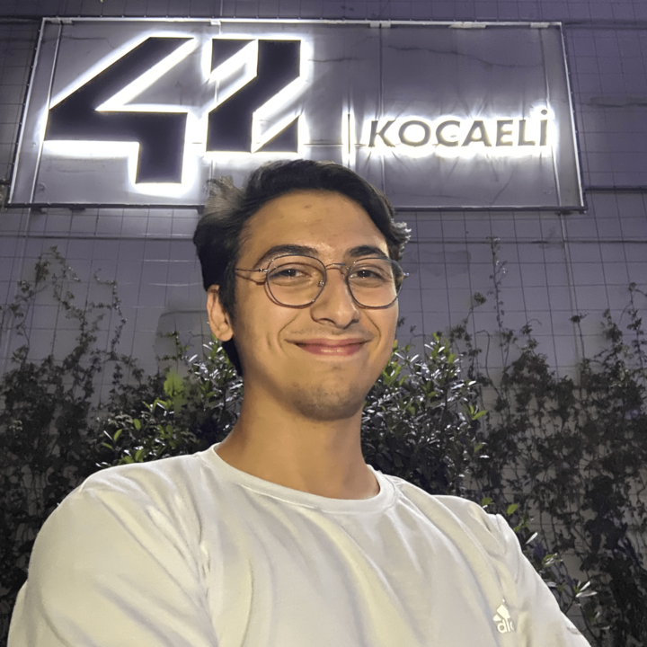

Furkan DULKADİR's Resume
I am a Software Engineering student at Kayseri University, experienced
in front-end development. I have developed projects using Vue.js and
Nuxt.js, gaining experience in creating dynamic and user-friendly web
applications.
